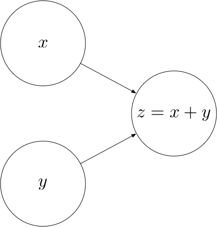

Deep Learning From Scratch I: Computational Graphs
This is part 1 of a series of tutorials, in which we develop the mathematical and algorithmic underpinnings of deep neural networks from scratch and implement our own neural network library in Python, mimicking the TensorFlow API.
- Part I: Computational Graphs
- Part II: Perceptrons
- Part III: Training Criterion
- Part IV: Gradient Descent and Backpropagation
- Part V: Multi-Layer Perceptrons
- Part VI: TensorFlow
I do not assume that you have any preknowledge about machine learning or neural networks. However, you should have some preknowledge of calculus, linear algebra, fundamental algorithms and probability theory on an undergraduate level. If you get stuck at some point, please leave a comment.
By the end of this text, you will have a deep understanding of the math behind neural networks and how deep learning libraries work under the hood.
I have tried to keep the code as simple and concise as possible, favoring conceptual clarity over efficiency. Since our API mimics the TensorFlow API, you will know how to use TensorFlow once you have finished this text, and you will know how TensorFlow works under the hood conceptually (without all the overhead that comes with an omnipotent, maximally efficient machine learning API).
The full source code of the API can be found at https://github.com/danielsabinasz/TensorSlow. You also find a Jupyter Notebook there, which is equivalent to this blog post but allows you to fiddle with the code.
Computational graphs
We shall start by defining the concept of a computational graph, since neural networks are a special form thereof. A computational graph is a directed graph where the nodes correspond to operations or variables. Variables can feed their value into operations, and operations can feed their output into other operations. This way, every node in the graph defines a function of the variables.
The values that are fed into the nodes and come out of the nodes are called tensors, which is just a fancy word for a multi-dimensional array. Hence, it subsumes scalars, vectors and matrices as well as tensors of a higher rank.
Let’s look at an example. The following computational graph computes the sum $z$ of two inputs $x$ and
$y$.
Here, $x$ and $y$ are input nodes to $z$ and $z$ is a consumer of $x$ and $y$. $z$ therefore
defines a function $z : \mathbb{R^2} \rightarrow \mathbb{R}$ where $z(x, y) = x + y$.

The concept of a computational graph becomes more useful once the computations become more complex. For example, the following computational graph defines an affine transformation $z(A, x, b) = Ax + b$.
Operations
Every operation is characterized by three things:
- A
computefunction that computes the operation’s output given values for the operation’s inputs - A list of
input_nodeswhich can be variables or other operations - A list of
consumersthat use the operation’s output as their input
Let’s put this into code:
class Operation:
"""Represents a graph node that performs a computation.
An `Operation` is a node in a `Graph` that takes zero or
more objects as input, and produces zero or more objects
as output.
"""
def __init__(self, input_nodes=[]):
"""Construct Operation
"""
self.input_nodes = input_nodes
# Initialize list of consumers (i.e. nodes that receive this operation’s output as input)
self.consumers = []
# Append this operation to the list of consumers of all input nodes
for input_node in input_nodes:
input_node.consumers.append(self)
# Append this operation to the list of operations in the currently active default graph
_default_graph.operations.append(self)
def compute(self):
"""Computes the output of this operation.
"" Must be implemented by the particular operation.
"""
passSome elementary operations
Let’s implement some elementary operations in order to become familiar with the Operation class
(and because we will need them later). In both of these operations, we assume that the tensors are NumPy arrays, in which the element-wise
addition and matrix multiplication (.dot) are already implemented for
us.
Addition
class add(Operation):
"""Returns x + y element-wise.
"""
def __init__(self, x, y):
"""Construct add
Args:
x: First summand node
y: Second summand node
"""
super().__init__([x, y])
def compute(self, x_value, y_value):
"""Compute the output of the add operation
Args:
x_value: First summand value
y_value: Second summand value
"""
return x_value + y_valueMatrix multiplication
class matmul(Operation):
"""Multiplies matrix a by matrix b, producing a * b.
"""
def __init__(self, a, b):
"""Construct matmul
Args:
a: First matrix
b: Second matrix
"""
super().__init__([a, b])
def compute(self, a_value, b_value):
"""Compute the output of the matmul operation
Args:
a_value: First matrix value
b_value: Second matrix value
"""
return a_value.dot(b_value)Placeholders
Not all the nodes in a computational graph are operations. For example, in the affine transformation graph, $A$, $x$ and $b$ are not operations. Rather, they are inputs to the graph that have to be supplied with a value once we want to compute the output of the graph. To provide such values, we introduce placeholders.
class placeholder:
"""Represents a placeholder node that has to be provided with a value
when computing the output of a computational graph
"""
def __init__(self):
"""Construct placeholder
"""
self.consumers = []
# Append this placeholder to the list of placeholders in the currently active default graph
_default_graph.placeholders.append(self)Variables
In the affine transformation graph, there is a qualitative difference between $x$ on the one hand and $A$ and $b$ on the other hand. While $x$ is an input to the operation, $A$ and $b$ are parameters of the operation, i.e. they are intrinsic to the graph. We will refer to such parameters as Variables.
class Variable:
"""Represents a variable (i.e. an intrinsic, changeable parameter of a computational graph).
"""
def __init__(self, initial_value=None):
"""Construct Variable
Args:
initial_value: The initial value of this variable
"""
self.value = initial_value
self.consumers = []
# Append this variable to the list of variables in the currently active default graph
_default_graph.variables.append(self)The Graph class
Finally, we’ll need a class that bundles all the operations, placeholders and variables together. When
creating a new graph, we can call its as_default method to set the _default_graph
to this graph. This way, we can create operations, placeholders and variables without having to pass in a
reference to the graph everytime.
class Graph:
"""Represents a computational graph
"""
def __init__(self):
"""Construct Graph"""
self.operations = []
self.placeholders = []
self.variables = []
def as_default(self):
global _default_graph
_default_graph = selfExample
Let’s now use the classes we have built to create a computational graph for the following affine transformation:
$$
z = \begin{pmatrix}
1 & 0 \\
0 & -1
\end{pmatrix}
\cdot
x
+
\begin{pmatrix}
1
\\
1
\end{pmatrix}
$$
# Create a new graph
Graph().as_default()
# Create variables
A = Variable([[1, 0], [0, -1]])
b = Variable([1, 1])
# Create placeholder
x = placeholder()
# Create hidden node y
y = matmul(A, x)
# Create output node z
z = add(y, b)Computing the output of an operation
Now that we are confident creating computational graphs, we can start to think about how to compute the output of an operation.
Let’s create a Session class that encapsulates an execution of an operation. We would like to be able to
create a session instance and call a run method on this instance, passing the operation that we
want to compute and a dictionary containing values for the placeholders:
session = Session()
output = session.run(z, {
x: [1, 2]
})
This should compute the following value:
$$
z = \begin{pmatrix}
1 & 0 \\
0 &
-1
\end{pmatrix}
\cdot
\begin{pmatrix}
1 \\
2
\end{pmatrix}
+
\begin{pmatrix}
1
\\
1
\end{pmatrix}
=
\begin{pmatrix}
2 \\
-1
\end{pmatrix}
$$
In order to compute the function represented by an operation, we need to apply the computations in the right order. For example, we cannot compute $z$ before we have computed $y$ as an intermediate result. Therefore, we have to make sure that the operations are carried out in the right order, such that the values of every node that is an input to an operation $o$ has been computed before $o$ is computed. This can be achieved via post-order traversal.
import numpy as np
class Session:
"""Represents a particular execution of a computational graph.
"""
def run(self, operation, feed_dict={}):
"""Computes the output of an operation
Args:
operation: The operation whose output we’d like to compute.
feed_dict: A dictionary that maps placeholders to values for this session
"""
# Perform a post-order traversal of the graph to bring the nodes into the right order
nodes_postorder = traverse_postorder(operation)
# Iterate all nodes to determine their value
for node in nodes_postorder:
if type(node) == placeholder:
# Set the node value to the placeholder value from feed_dict
node.output = feed_dict[node]
elif type(node) == Variable:
# Set the node value to the variable’s value attribute
node.output = node.value
else: # Operation
# Get the input values for this operation from node_values
node.inputs = [input_node.output for input_node in node.input_nodes]
# Compute the output of this operation
node.output = node.compute(*node.inputs)
# Convert lists to numpy arrays
if type(node.output) == list:
node.output = np.array(node.output)
# Return the requested node value
return operation.output
def traverse_postorder(operation):
"""Performs a post-order traversal, returning a list of nodes
in the order in which they have to be computed
Args:
operation: The operation to start traversal at
"""
nodes_postorder = []
def recurse(node):
if isinstance(node, Operation):
for input_node in node.input_nodes:
recurse(input_node)
nodes_postorder.append(node)
recurse(operation)
return nodes_postorderLet’s test our class on the example from above:
session = Session()
output = session.run(z, {
x: [1, 2]
})
print(output)Looks good.
If you have any questions, feel free to leave a comment. Otherwise, continue with the next part: II: Perceptrons.